CoinGecko API read about $0.02916 per KAS on August 22, 2026, up from $0.0269 on August 8. Coinbase lists the all-time high as $0.2075.
Proof-of-work mining
Kaspa mining
Price can fall while hash rate keeps climbing, and both charts can be telling the truth. A coin market reprices in minutes. A machine market (ASIC orders, shipping, hosting, wiring) answers weeks or months later. This page covers that gap, then walks through pointing your own ASIC at your own node.
Checked August 22, 2026: Rusty Kaspa v2.0.1 is the Toccata upgrade release. The Rusty Kaspa Stratum Bridge is marked beta in the official docs. Toccata activated at DAA score 474,165,565. Market numbers below were read August 22, 2026. Nothing here is a price call or a miner-profitability calculator.
Snapshot
Checked August 22, 2026
The public Kaspa API returned about 311.3 PH/s, up from 282.4 PH/s on August 8. The Kaspa wiki timeline recorded 500 TH/s on November 29, 2022.
The public Kaspa API returned about 27.655B KAS circulating out of about 28.704B KAS maximum supply.
The public Kaspa API returned about 2.31246515 KAS per block under the emission step that began at DAA score 504,909,000 in the 10 BPS era, unchanged since August 8.
These numbers move by the week. The hash-rate comparison is rough: 311 PH/s is roughly 623 times the wiki's 500 TH/s milestone from November 2022.
The two markets
A proof-of-work coin runs two markets at once. The coin market reprices on buyer and seller mood: exchanges, leverage, attention, fear. It can move before lunch. The machine market moves on hardware: miners order ASICs, wait for production, wait for shipping, find hosting, wire power, tune firmware, join pools. None of that happens in an afternoon.
Price can fall while hash rate keeps rising, because machines ordered months earlier are still arriving on trucks. Hash rate can fall while the network sits far above where it stood a year prior. Used ASIC prices can collapse after new production overshoots demand that already cooled.
Miners chase margin. Holders chase an exit or hold through it. Buyers chase a price they can stomach. ASIC makers chase order volume. None of them has to be irrational: the lag between the two markets does the rest of the work. The snapshot above carries that lag in one panel, a price downtrend and a multi-year hash-rate buildout, both true at once.
Coin market
minutes to days
price, liquidity, sentiment
Machine market
weeks to months
ASIC orders, shipping, hosting, hash rate, difficulty
Demand, liquidity, attention, and holder behavior reprice KAS within hours.
Price, block reward, fees, difficulty, and power cost decide whether mining pays that day.
Profitable mining pulls capital toward hardware orders and hosting contracts.
ASICs ordered on a price signal can come online after that signal has already faded.
More machines compete for the same block reward, so each machine earns less KAS per unit of hash rate.
The cold phase moves hardware, coins, and conviction to whoever can outlast it.
Visual shelf: market lag and miner margin
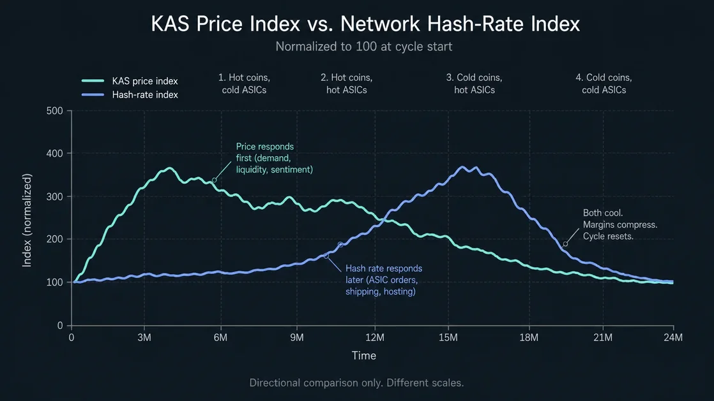
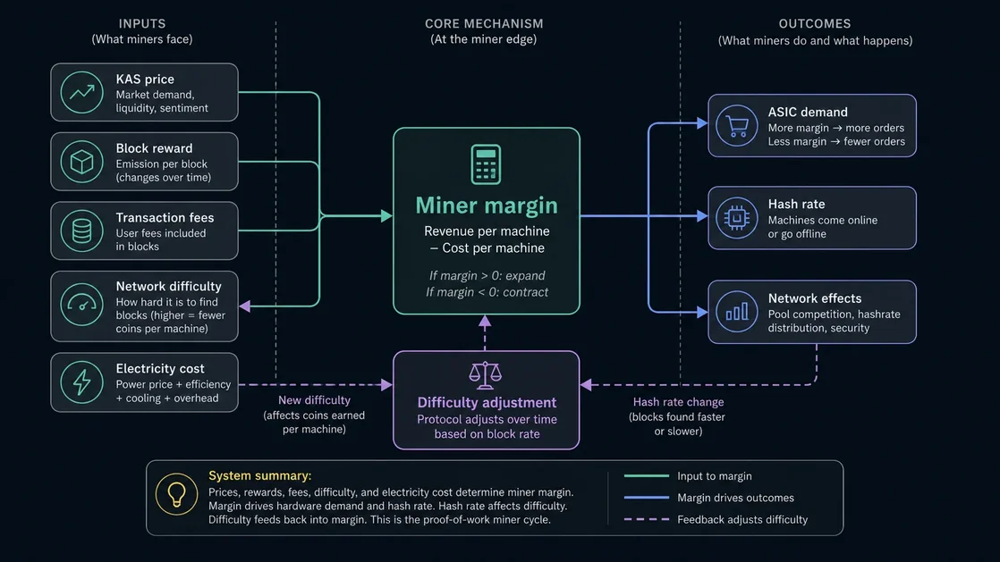
Cycle model
Coins and ASICs heat and cool at different times
@Themooseisloos5 has framed Kaspa's coin-and-ASIC cycle as a Carnot-engine style model. The metaphor is secondary. The lag it's pointing at is the mechanism worth tracking, and it cycles through four phases.
Hot coins, cold ASICs
Demand moves into KAS before hardware can respond. Price rises, mining margins expand, and idle or cheap machines suddenly pencil out.
Hot coins, hot ASICs
ASIC demand catches up. New machines get ordered, old machines get repriced upward, hash rate climbs, and early holders or miners start taking profit.
Cold coins, hot ASICs
Price cools while machines already on order keep arriving. Difficulty can rise into a weak market, which crushes miner margins further.
Cold coins, cold ASICs
Weak miners shut off or sell. Used machines get cheaper. Coins consolidate. The system compresses until demand, hardware, and conviction find a new balance.
Kaspa compressed several discovery phases that took Bitcoin years into one short window: fair launch, fast emissions, GPU mining, an ASIC transition, exchange discovery, and price discovery all landed close together, followed by a large mining buildout. Bitcoin's early distribution, hardware maturation, exchange access, and public understanding all spread out over a much longer stretch. Compression cuts both ways. A bigger up and a bigger down both become more likely, and whether that produces a stronger base is not visible in real time. It shows up one, two, five years later, if it shows up at all.
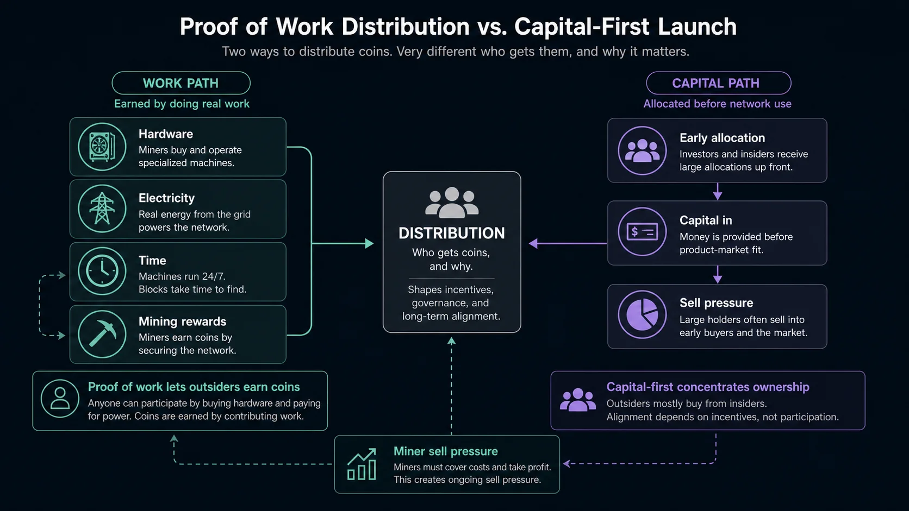
Kaspa's fast emission schedule moves supply toward its cap quickly, which is part of the hard-money thesis. The same speed front-loads distribution pressure. Early miners and early participants earned coins by running hardware, with no allocation sold up front. That's the fair-launch case. It also means the early market absorbs a steady flow of coins moving from early miners and holders into later buyers: some take profit, some miners sell to cover power and hardware bills, some holders panic, some accumulate. Fair distribution on paper can still produce an ugly chart.
Conviction usually gets tested on the downside. The upside tests it too, since rallies tempt profit-taking the same way drawdowns tempt capitulation. Both directions move coins from one kind of holder to another.
Visual shelf: the cycle as a picture
Concept sketches, not dated charts. Price, DAA score, reward, hash rate, and supply move constantly; the snapshot panel above carries the dated numbers.
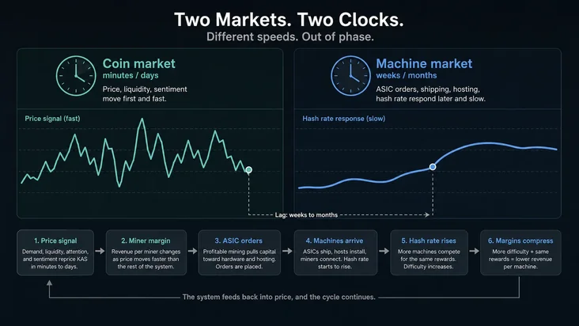
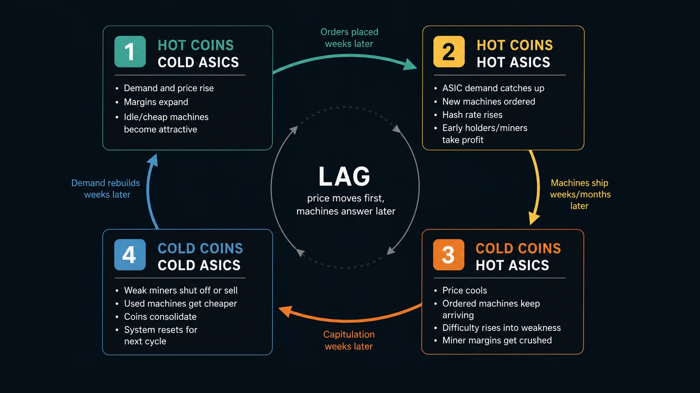
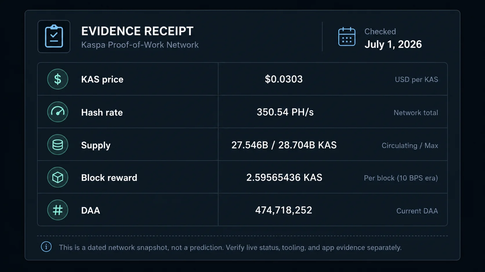
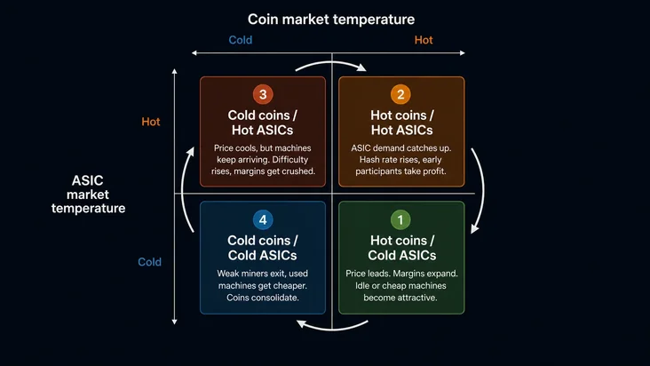
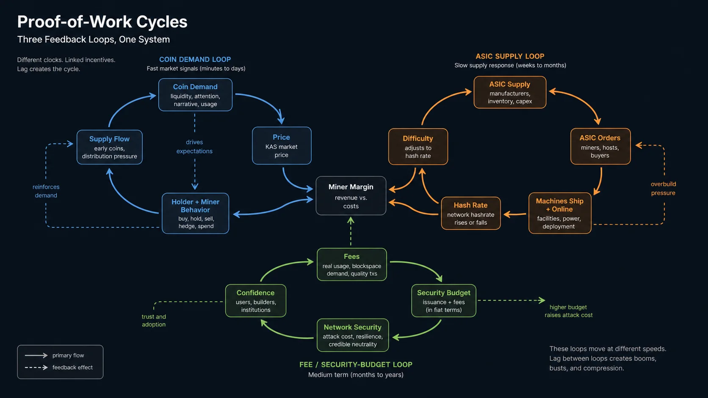
None of these establish current price, hash rate, DAA score, supply, reward, exchange depth, ASIC supply, or miner distribution.
ASICs buy security, with a bill attached
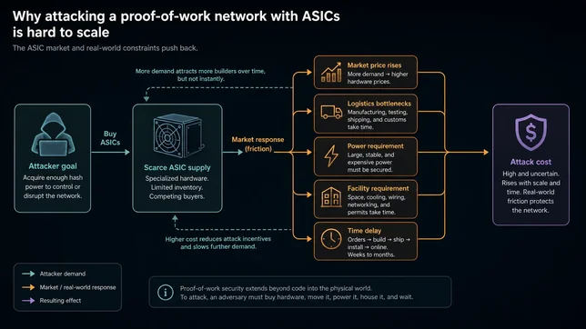
A Kaspa attacker cannot rent generic cloud compute and point it at the network.
They need specialized KHeavyHash machines, electricity, facilities, cooling, firmware, logistics, and a pool or solo-mining path. Every one of those steps takes time and leaves a trail. The attack has to leave the spreadsheet and enter a supply chain.
The same specialization that prices out an attacker prices out most ordinary participants too. Control settles with ASIC manufacturers, large buyers, cheap-power operators, firmware vendors, pools, and hosting sites. Used markets and more independent operators spread that control back out. A handful of dominant actors pull it in again.
Proof of work turns digital security into a physical bill. Electricity, hardware, heat, buildings, freight, capital, and time all get paid before a block gets mined. Proof of stake asks holders to lock the asset and follow validator rules. Proof of work recruits a different cast: miners carrying power bills, hosting contracts, repair costs, firmware choices, debt, and taxes, running machines that age in the real world. That friction is the security model, and it is also why mining behaves like an industry with payment terms instead of a balance sitting in a contract.
Visual shelf: attack cost and physical inputs
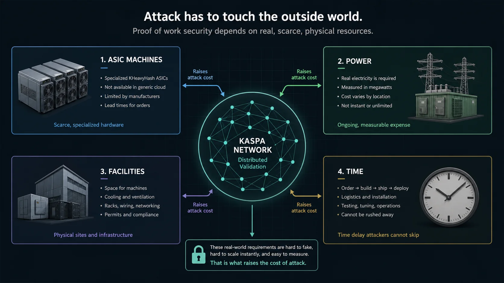
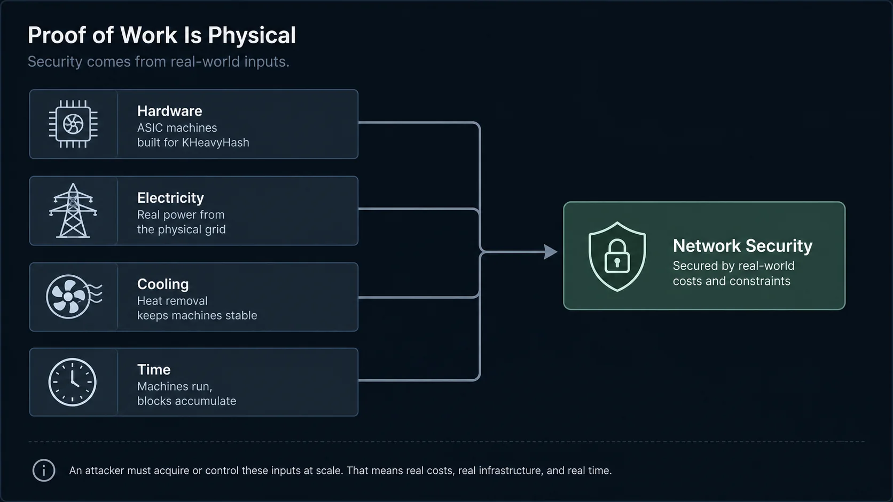
Judging the charts
One chart, several stories
| Signal | Too-fast reading | Slower reading |
|---|---|---|
| Price down | The market lost interest. | Lost demand, miner selling, early-holder profit-taking, broad market weakness, and leverage unwinds can all produce the same line, separately or together. |
| Hash rate down | The network is failing. | Weaker security is one explanation. Inefficient miners leaving after an overheated ASIC cycle is another. Compare against long-term history and attack cost before picking one. |
| Hash rate up while price falls | Security is fine, ignore price. | Delayed ASIC orders can be arriving into a weak market, raising difficulty and squeezing every miner's margin at once. |
| ASIC prices fall | Mining is dead. | Used-machine oversupply after manufacturers and miners overbuilt into a hot phase produces the same price drop. |
| Fees rise | Higher fees are automatically good. | Fees from repeat use people value help miners. Spam and one-off bursts push the number up without meaning the same thing. |
Go deeper: linear charts hide the thing people actually care about
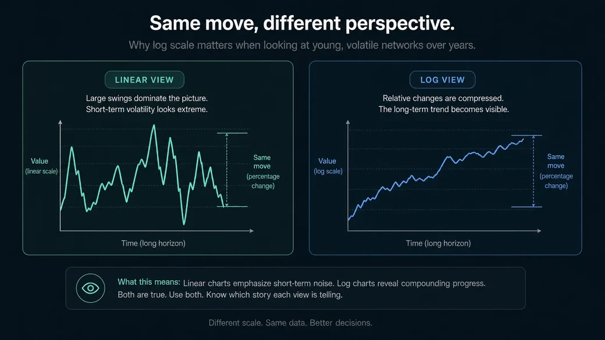
A move from $10 to $20 and a move from $10,000 to $20,000 are both 2x. The dollar amounts feel wildly different. The percentage effect on a holder's position is identical.
Log scale fits a young network better than linear. An 80% drawdown looks like death on a linear chart. On a log chart, the same drawdown can read as one violent move inside a much longer compounding path.
The eye tracks distance on the page. The portfolio tracks percentage change.
Drawdowns are still real losses for whoever is holding them. A top buyer sees a straight loss. An early holder may be looking at a brutal drawdown measured from absurd gains. Someone who bought early and never sold can be living through both pain and life-changing profit in the same chart.
Go deeper: market cap is not a pile of cash
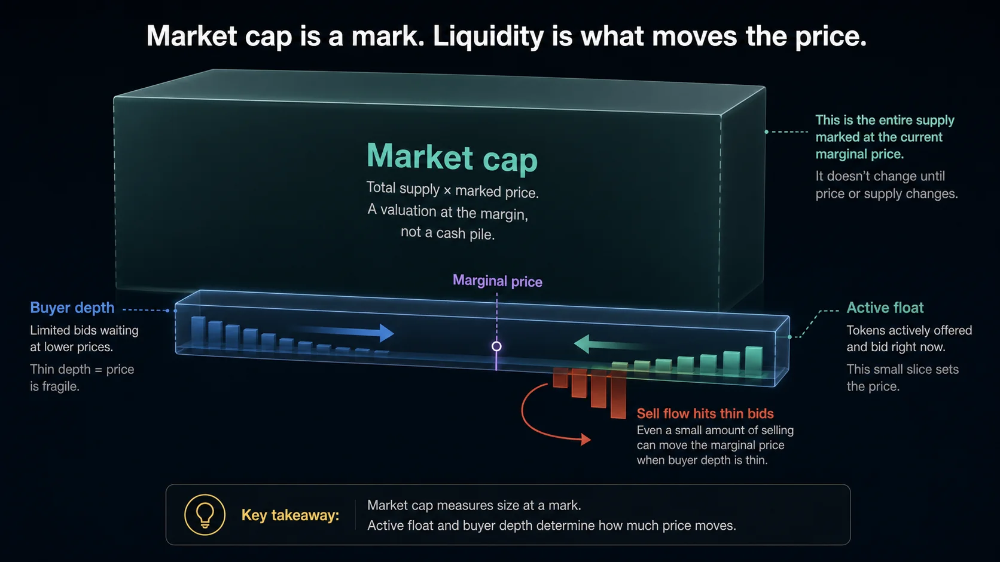
Market cap is total supply marked at the marginal price. It isn't a pool of cash sitting somewhere.
A 20% price drop does not mean sellers extracted 20% of the market cap in cash. A small amount of selling can move price a long way once buyers step back. A liquidation can dump coins into market inventory that takes the market weeks or months to absorb. Sellers can keep leaning on the order book because they need liquidity before they need conviction.
Market cap looks like a pool of money. Price is set at the edge, where the next buyer meets the next seller.
Active float sets selloff pressure: how many coins are actually for sale, how urgent those sellers are, and how deep the buyers sit at each price rung. Total supply matters for the monetary story. Float matters in a selloff.
A large liquidation keeps reshaping the market long after the candle closes, as coins move from one kind of holder into another kind of inventory. The wallet-level story needs stronger sourcing before naming actors.
Go deeper: miners do not get to be pure believers
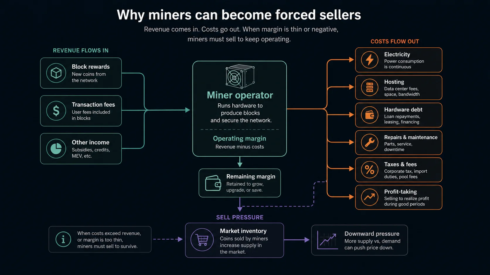
A holder can decide to sit still. A miner has bills: electricity, hosting, hardware debt, repairs, taxes, pool fees, upgrades. Thin margins turn a believer into a seller regardless of conviction.
Mining paid extremely well when price outran hash rate, and ASICs got expensive because that revenue opportunity was real: some machines ran tens of thousands of dollars during the hot phase. Operators with that cost basis recoup it partly by selling coins.
Miner selling is a line item, the same as the power bill.
Fees are the second revenue source
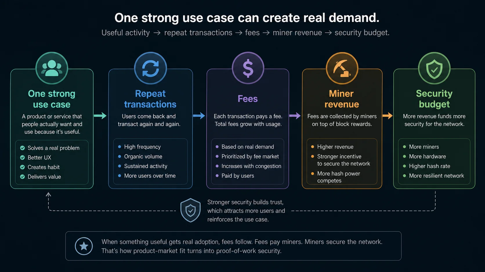
Issuance pays miners first. Fees have to matter later: that's the central security-budget question.
As the block reward declines, miners need meaningful revenue from transaction fees, coin value, or both. Toccata widens the design space that could generate that fee demand: covenants, covenant IDs, ZK proof verification, sequencing commitments, and based-app foundations.
Primitives are not usage. The fee side still needs shipped applications, users who come back, accepted transactions, and demand for blockspace that outlasts a launch campaign.
One use case is enough, if it repeats. One thing generating repeat demand for settlement, ordering, proofs, assets, or payments can reprice blockspace and pull fees into the security budget, and finding that thing is the open part of the experiment.
Visual shelf: issuance handing off to fees
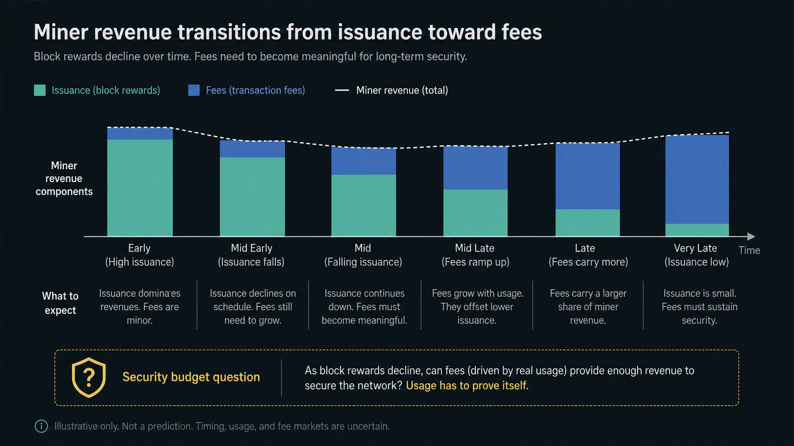
Evidence
What would prove strength or weakness
Healthier
- Hash rate stabilizes or grows alongside better pool and operator distribution.
- ASIC ownership spreads through used markets and more independent operators.
- Wallets, explorers, SDKs, indexers, and solo-mining paths keep improving.
- Toccata generates repeat app use, accepted transactions, and fees miners actually collect.
- Liquidity improves on its own terms, independent of every other claim.
Worse
- Hash rate keeps falling alongside worse mining concentration.
- Pool, manufacturer, firmware, hosting, or geography chokepoints tighten further.
- Price, liquidity, and volume keep weakening with no user demand replacing the hype that left.
- Fees stay irrelevant because apps do not appear or do not retain users.
- Roadmap language keeps outrunning shipped product evidence.
Nobody knows live
- How much selling came from miners versus early holders versus broader market flows.
- Whether future fees can replace enough issuance as the block reward keeps declining.
- Whether a research path such as Proof of Useful Work ever ships.
- Whether the next major cycle runs up, down, sideways, or something stranger.
Whether Kaspa is in a healthy compression phase or a deeper failure phase is not knowable in real time. Anyone claiming otherwise is selling certainty the data does not have. Price alone is too narrow a signal. Hash rate alone is too narrow. Read them next to ASIC prices, pool distribution, miner revenue, emissions, fees, and builder activity.
Solo mining
Point your own ASIC at your own node
An ASIC and a node don't talk to each other directly. Your miner speaks Stratum; your Kaspa node speaks Kaspa RPC. The Rusty Kaspa Stratum Bridge is the translator that sits between them.
Miner
The ASIC does the hashing. Its web screen usually asks for a pool URL, username, and password.
Bridge
The Rusty Kaspa Stratum Bridge accepts the miner connection and talks to a Kaspa node.
Node
The node hands the bridge block templates and takes back solved blocks.
Wallet address
The address in the miner username is where a solo block reward lands if the miner finds a block.
Shares only prove the miner is talking to the bridge. A block reward arrives when the hardware finds a valid block, and solo variance means that can take a while even on working hardware.
The beginner setup
One computer runs both the node and bridge. Keep two terminal windows open on that computer, then open the miner's web screen in a browser.
- Download the Rusty Kaspa zip for the node computer.
- Extract the zip and open a terminal in the folder holding the binaries.
- Download the sample bridge config from the repository and save it as
bridge/config.yamlthere. The archive does not include one. - Terminal window A runs
kaspad. Leave it open. - Terminal window B runs
stratum-bridge. Leave it open. - The bridge dashboard opens at
http://127.0.0.1:3030/on the node computer. - The miner points to the node computer's local IP plus port
5555. - The miner username is the Kaspa receive address plus a worker name.
- The dashboard should show a worker, shares, and hashrate.
Keep the node, bridge, and miner on the same local network for the first setup. Do not expose RPC, dashboard, or Stratum ports to the public internet while learning.
Before touching the miner
An IceRiver, Bitmain, Goldshell, or another compatible Kaspa ASIC. The bridge docs also list BzMiner support.
A computer running Rusty Kaspa v2.0.1 or newer. Running bridge and node on the same machine avoids a second network hop while learning.
A Kaspa address for rewards. Copy it carefully. Never paste a private key into miner or bridge settings.
The node computer's address on the home network, such as 192.168.1.10.
The release archive ships the stratum-bridge binary and no config file. Download the sample config.yaml from the repository and save it as bridge/config.yaml beside the binary.
Which Rusty Kaspa file do I download?
Use the official Rusty Kaspa v2.0.1 release page and grab the archive matching the computer that will run the node and bridge.
| Computer | Release asset |
|---|---|
| Windows | rusty-kaspa-v2.0.1-win64.zip |
| macOS | rusty-kaspa-v2.0.1-osx.zip |
| Linux, 64-bit Intel/AMD | rusty-kaspa-v2.0.1-linux-amd64.zip |
Skip the GitHub Source code zip and the WASM SDK zip: those build from source or target browser apps, and neither matches this setup.
Get from zip file to working folder
Every command below runs from the folder holding the extracted binaries.
Right-click the downloaded zip, choose Extract All, then open the extracted folder. The Windows archive puts four binaries at the top level, among them kaspad.exe and stratum-bridge.exe.
Double-click the zip (Safari may have already unpacked it). The macOS archive nests its four binaries one level down, in a bin folder holding kaspad and stratum-bridge.
Use the file manager's Extract option, or run unzip rusty-kaspa-v2.0.1-linux-amd64.zip. Like macOS, the Linux archive puts its binaries in a bin folder.
"Open a terminal in that folder" means whichever directory holds kaspad and stratum-bridge: the top of the extract on Windows, the bin subfolder on macOS and Linux. None of the three archives carries a config file, so put the downloaded sample at bridge/config.yaml under that same directory before running the bridge.
Which instructions apply to you?
| Your setup | Use this route |
|---|---|
| A synced node already runs on this computer | Skip to the bridge command for your operating system in external-node mode, then point the ASIC at this computer's local IP. |
| Rusty Kaspa is downloaded but the node hasn't started yet | Start kaspad first, wait for sync, then start the bridge. |
| The bridge should start its own node | Use in-process mode from the official bridge docs. The beginner route below uses external-node mode, which assumes a node already running. |
| The node runs on another computer | Keep the first attempt on one machine if possible. If the node stays remote, edit the bridge config so kaspad_address points to that node's RPC address. |
Step 1. Open terminal window A and run the node
Get into the folder holding the binaries first. On Windows, open the extracted folder in File Explorer, click the address bar, type powershell, and press Enter. On macOS or Linux, open Terminal, type cd , drag the bin folder from inside the extract into Terminal, and press Enter.
Run the node command for your system, and leave this window open. The bridge needs the node running continuously to fetch templates and submit blocks.
Terminal window A
.\kaspad.exe --utxoindex --rpclisten=127.0.0.1:16110Terminal window A
./kaspad --utxoindex --rpclisten=127.0.0.1:16110Templates from an unsynced node point at stale chain state, so let sync finish before judging mining results. If a node already runs with custom flags, keep those flags and add the RPC listen setting only if the bridge can't reach the node. The official bridge docs use 127.0.0.1:16110 for the node RPC address.
Step 2A
Open terminal window B and run the bridge on Windows
PowerShell command, dashboard check, port check, and debug logs.
- Leave the node running in terminal window A.
- Open a second PowerShell window in the same extracted Rusty Kaspa folder.
- Run the bridge in external-node mode.
- Leave this window open too.
.\stratum-bridge.exe --config bridge/config.yaml --node-mode externalOpen the dashboard in a browser on the node computer:
http://127.0.0.1:3030/To check whether the bridge is listening on port 5555:
netstat -ano | findstr :5555To turn on more detailed bridge logs before starting it:
$env:RUST_LOG="info,kaspa_stratum_bridge=debug""Cannot find bridge/config.yaml" means the config was never downloaded, since the release archive does not ship one. A dashboard that won't open points the same way: the bridge falls back to code defaults when it finds no config, and those defaults leave the dashboard switched off. Check the last few lines printed in terminal window B.
Step 2B
Open terminal window B and run the bridge on macOS or Linux
Terminal command, dashboard check, port check, and debug logs.
- Leave the node running in terminal window A.
- Open a second Terminal window in the same extracted Rusty Kaspa folder.
- If needed, allow the binary to run.
- Run the bridge in external-node mode.
- Leave this window open too.
chmod +x ./stratum-bridge
./stratum-bridge --config bridge/config.yaml --node-mode externalOpen the dashboard in a browser on the node computer:
http://127.0.0.1:3030/To check whether the bridge is listening on port 5555:
lsof -i :5555To turn on more detailed bridge logs for one run:
RUST_LOG="info,kaspa_stratum_bridge=debug" ./stratum-bridge --config bridge/config.yaml --node-mode externalOn macOS, Gatekeeper may ask for approval before it runs a downloaded binary. Only approve binaries pulled from the official Rusty Kaspa release page.
Other route
If the bridge should start its own node
In-process mode from the official bridge docs.
In-process mode, also documented by the bridge, starts kaspad inside the same process as the bridge rather than as a separate program.
Bridge plus in-process node
.\stratum-bridge.exe --config bridge/config.yaml --node-mode inprocess -- --utxoindex --rpclisten=127.0.0.1:16110Bridge plus in-process node
./stratum-bridge --config bridge/config.yaml --node-mode inprocess -- --utxoindex --rpclisten=127.0.0.1:16110The -- separator is not optional. Bridge flags go before it, node flags after.
Step 3. Find the node computer's local IP address
The miner needs the local network address of the computer running the bridge, usually something like 192.168.x.x or 10.0.x.x.
PowerShell or Command Prompt
ipconfigLook for the active Wi-Fi or Ethernet adapter and copy the IPv4 Address.
Wi-Fi
ipconfig getifaddr en0If Ethernet is active, System Settings can be easier: Network, then your active connection, then Details.
Terminal
hostname -IUse the address on the same network as your miner.
Step 4. Point the ASIC at the bridge
Open the miner's web screen. If you don't know the miner's IP address, check your router's connected-device list or the manufacturer's setup tool. Type the miner IP into a browser, sign in, and find the mining or pool configuration page.
Use the bridge computer's local IP address and one of the Stratum ports from the sample config, starting with port 5555.
| Miner field | Put this in | Example |
|---|---|---|
| Pool URL | <node-computer-ip>:5555 |
192.168.1.10:5555 |
| Username / worker | kaspa:YOUR_WALLET_ADDRESS.WORKERNAME |
kaspa:kaspa:qq...abcd.ks0 |
| Password | Use the miner UI default if it requires a value. | x is common in miner UIs, but the Rusty Kaspa bridge docs define only pool URL and username. |
A Kaspa address already starts with kaspa:, so the username field ends up looking like kaspa:kaspa:.... That duplication matches the official bridge format; it's not a typo. Some miner screens expect a URL prefix instead. The official bridge docs give the pool URL as <your_pc_IPv4>:<stratum_port>; if a miner rejects that format, check its manual for the exact Stratum URL syntax it wants.
Miner brands
What changes by miner or software type?
IceRiver, Bitmain, BzMiner, Goldshell, and field-name differences.
The bridge detects several miner and mining-software types automatically and adjusts protocol handling per type. The setup screen itself still belongs to the miner manufacturer, so field labels vary. The bridge docs list two job formats, and every supported device falls into one of them.
IceRiver, BzMiner, and Goldshell.
Bitmain and GodMiner.
Whatever the brand, the fields that matter stay the same: pool URL, username or wallet field, and a password only if the miner UI demands one.
Ports
Pick the first port
Start with 5555, then use lower difficulty ports only for troubleshooting.
The sample config exposes several Stratum ports, each tuned to a different worker difficulty. Start with 5555. Drop to a lower-difficulty port only when troubleshooting a connection or matching a weaker worker per the bridge docs.
| Port | Sample config purpose |
|---|---|
5559 | Low-difficulty workers. |
5560 | Low-difficulty workers. |
5561 | Medium-difficulty workers. |
5555 | Higher-difficulty workers. Start here for a normal ASIC setup. |
5556, 5557, 5558 | Higher difficulty ports. |
Step 5
Check that it's working
Bridge window, dashboard, miner screen, and node checks.
Should keep running and show miner connection or job activity.
Open http://127.0.0.1:3030/ and look for active workers, shares, hashrate, and recent activity.
Should show an active pool, accepted shares, and hashrate.
Should stay synced and keep receiving network updates.
Accepted shares confirm the setup is wired correctly. They are not the reward event: a found block is. A correctly configured rig can run for a long stretch with steady shares and zero blocks. That is solo variance.
Toccata
Toccata mining checks
Version, activation record, post-Toccata template fields, and testnet checks.
Post-activation block templates can carry new transaction fields. The official node guide warns pools and custom mining stacks to preserve those fields all the way from block template to solved block submission, or risk submitting an invalid block.
Use Rusty Kaspa v2.0.1 or newer for the node and bridge path.
Mainnet activation crossed DAA score 474,165,565. Check Toccata status for post-activation checks.
Custom mining software must preserve post-Toccata fields: transaction version, storage mass, compute budget, and covenant outputs.
Run it on Testnet-10 where possible before trusting a mainnet mining path built after the activation score.
Fixes
If it doesn't connect
Pool dead, empty dashboard, bridge-node RPC, firewall, rewards, and activation-day checks.
| Symptom | Check |
|---|---|
| Miner says pool dead | Use the node computer's local IP address. 127.0.0.1 points the miner back at itself. |
| Dashboard is empty | Check the bridge is still running, the miner is on the same network, and the pool URL uses a port from the sample config. |
| Bridge cannot reach node | Confirm the node is running with RPC at 127.0.0.1:16110, or update the bridge config to the node's actual RPC address. |
| Firewall blocks connection | Allow the Stratum port on the node computer for the local network. |
| No rewards | Check shares first. Rewards need a solved block, and solo variance can leave a working rig without one for a long time. |
| Toccata activation day | Recheck versions and logs. Past the activation score, a block that strips new fields is invalid. |
Keep node RPC, the bridge dashboard, and Stratum ports on the local network while learning.
Use a public Kaspa receive address for the miner username. Never paste a seed phrase or private key into miner, bridge, or dashboard settings.
Sources
Source notes
| Source | Used for |
|---|---|
| Rusty Kaspa Stratum Bridge docs | Beta status, external-node mode, in-process mode, dashboard, ports, miner setup, and username format. |
| Sample bridge config | The file to download, since the release archives do not carry one. It sets the dashboard port, the Stratum ports, and the node RPC address. |
| Toccata node setup guide | v2.0.1 upgrade guidance, miner and pool checks, fee policy, and post-Toccata field preservation. |
| Rusty Kaspa v2.0.1 release | The Windows, macOS, and Linux archives used in this guide. |
| Kaspa public API: blockDAG state | August 22, 2026 mainnet DAA and network read. |
| Kaspa public API: coin supply and block reward | Dated supply and reward panel. |
| Kaspa public API: network hash rate | The dated hash-rate reading in the snapshot above. |
| Kaspa wiki timeline | Early hash-rate milestones: 60 MH/s in November 2021, 10 TH/s in June 2022, 50 TH/s in August 2022, and 500 TH/s in November 2022. |
| Kaspa wiki tokenomics | Fair-launch and no-premine context. |
| Coinbase Kaspa price page | All-time-high reference and market-data context. |
| CoinGecko Kaspa page and CoinGecko API | Dated current price read. |
| Kaspa Explained Toccata status | Activation tracked separately from the setup instructions. |
The coin-and-ASIC cycle framing is credited to @Themooseisloos5's X posts. Price, hash-rate, supply, and protocol-status claims use the sources listed above.